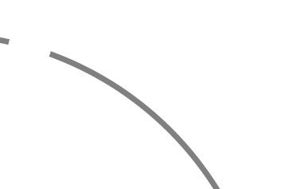
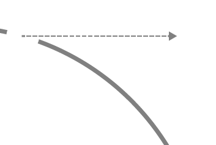
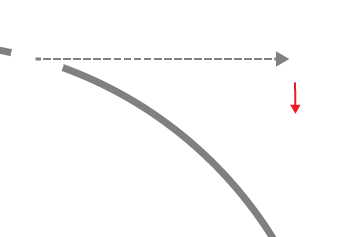
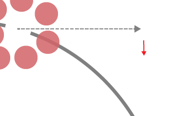
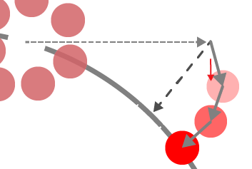
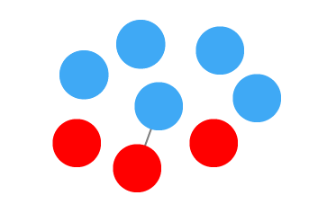
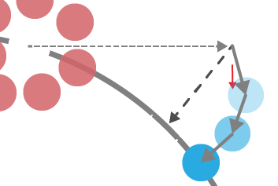
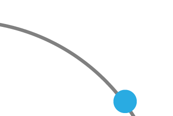
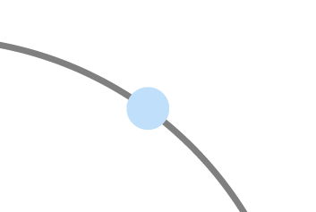

Heat-based bidirectional phase shifting simulation using position-based dynamics
Steeven Villa Salazar *; Jose
Abel
Ticona *; Rafael Torchelsen+; Luciana Nedel *;
Anderson Maciel *
* Universidade Federal do Rio Grande do Sul
+ Universidade Federal de Pelotas
+ Universidade Federal de Pelotas
Introduction
Melting
Freezing
Evaporation
Condensation
Introduction
Related Works
Introduction
A physically consistent implicit viscosity
solver for SPH fluids
Weiler M et al.
(2018)
Weiler M et al.
(2018)
Summary:
- Melting
SolidifyingVaporizationCondensation
Augmented mpm for phase-change and varied materials.
Stomakhin et al.
(2014)
Stomakhin et al.
(2014)
Summary:
- Melting
- Solidifying
VaporizationCondensation
Evaporation and Condensation of SPH-based Fluids
Hochstetter and Kolb
(2017)
Hochstetter and Kolb
(2017)
Summary:
MeltingSolidifying- Vaporization
- Condensation
An efficient heat-based model for solid-liquid-gas phase transition and dynamic interaction.
(2017) Gao Y et al.
(2017) Gao Y et al.
Summary:
- Melting
- Solidifying
- Vaporization
Condensation
Our Solution
Melting
Solidifying
Vaporization
Condensation
- Main phase transitions
- Full Lagrangian
- Low computational cost
- Interactive
Outline
Position-based dynamic
Position-based fluids
Heat transfer
Phase coupling
Transition coupling
Background
PBD
Position-based Dynamics (2006)
Matthias Müller et al.

Forces (accelerations)

Velocities

Positions
- Overshoot
- Reaction Lag
- Squashy

Positions

Corrections

Velocities
- Not Overshoot
- Controlled position change
-
Constraint-Based
\begin{equation} C\left(x\right)\approx 0 \end{equation} -
Positions Given By:
\begin{equation} \Delta x = \nabla C \left(x\right) \Delta \lambda \label{eq:deltax} \end{equation}
Outline
Position-based dynamic
Position-based fluids
Heat transfer
Phase coupling
Transition coupling
Background
SPH
Smoothed-particle hydrodynamics
Gingold y Monaghan (1977)


Particle
Distance between particles
Neighbors
Kernel influence
$A \left( \textbf{x} \right) = \sum_{j} m_{j} \frac{A_{j}}{\rho_{j}}$
$W\left(\textbf{x} - \textbf{x}_{j} , h\right)$
Density calculation
\begin{equation}
\rho_{i}=\sum m_{j} W\left( \textbf{r}_{i} - \textbf{r}_{j}, h \right)
\end{equation}
As Constraint:
\begin{equation}
C(\textbf{x})=\frac{\rho_{i}}{\rho_{0}}-1
\end{equation}
Position-based fluids (2013)
Miles Macklin et al
Outline
Position-based dynamic
Position-based fluids
Heat transfer
Phase coupling
Transition coupling
Background
Heat transfer
Cleary et al. (1999) scheme:
\begin{equation}
\left(\frac{dT}{dt}\right)=\frac{V_{i}}{ m_{i} c_{i} } \sum_{j} \frac{4k_{i}k_{j}}{k_{i}+k_{j}}V_{j}\left(
T_{i} -T_{j} \right) \nabla W_{ij}
\end{equation}
Latent Heat

\begin{equation}
\frac{dL}{dt} = c_{i} \Delta T
\end{equation}
Outline
Position-based dynamic
Position-based fluids
Heat transfer
Phase coupling
Transition coupling
+
+
Method
Phase coupling
$\rho_{i}=$
Solid
$\sum_{j} m_{j} W_{ij}$
Fluid
$\sum_{k}m_{k}
W_{ik}$
Boundaries
$\sum_{b}\frac{\rho_{0}}{\delta_{b}}
W_{ib}$
Solid Bodies

$C(x_{1},x_{2}) =(\mid x_{1} - x_{2}\mid - l_{0}+\Delta d_{0})E$
\begin{equation}
E = \frac{2 E_{0} }{1 + e^{\Delta T}}
\end{equation}
\begin{equation}
\Delta d_{0} = e \Delta T d_{0}
\end{equation}
Outline
Position-based dynamic
Position-based fluids
Heat transfer
Phase coupling
Transition coupling
+
+
Method
Transition Coupling
01 loop:02 for all Particles do calculate Next Positions03 for all Fluid Particles do Set Gravity-Acceleration04 for all Particles do Neighborhood Search05 loop Iterations:06 for all Particles do Density Constraint07 for all Fluid Particles do Viscosity Constraint08 for all Solid Particles do Distance Constraint09 for all Particles do Manage Constraints10 for all Particles do Heat Transfer11 for all Particles do Update Temperatures12 for all Particles do Update Velocities13 for all Particles do Update Neighborhood
Latent Heat of evaporation
Temperature
Latent Heat of melting










Liquid-gas Phase
03 for all Fluid Particles do Set Gravity-Acceleration
\begin{equation}
g\left(\omega \right) = \frac{10.8}{\ln \left( \frac{L_{e,threshold} + 0.02}{ 0.02} \right)} \ln \left( \omega
\right) - 9.8
\end{equation}
$\omega = \frac{L_{e,threshold} + 0.02}{ L_{e,threshold} + 0.02 - L_{e}}$
$\omega = \frac{L_{e,threshold} + 0.02}{ L_{e,threshold} + 0.02 - L_{e}}$
Liquid-gas Phase
06 for all Particles do Density Constraint
\begin{equation}
C(\textbf{x})=\frac{\rho_{i}}{\rho_{0}\beta}-1
\end{equation}
\begin{equation}
\beta\left(\gamma \right) = 1-\frac{1}{1 + \left(1 + \frac{12}{L_{e,threshold}}\right)^{\gamma}}
\end{equation}
$\gamma = \frac{L_{e,threshold}}{2} - L_{e}$.
Solid-liquid phase
09 for all Particles do Manage Constraints Constraint Manager | New Constraints
Distance between particles
Current and past state of the particle
Current number of constraints
$nCmax . 4 $
09 for all Particles do Manage Constraints Constraint Manager | Break Constraints
$j_1$
$i$
$j_2$
Results
Implementation in C++ (Starting from Jan Bender´s PBD code)
Rendered Using flex by Nvidia
Solidifying
Melting
Condensating
Evaporating
8k Particles
16k Particles
64k Particles
128k Particles
Summary
- Four Phase transitions
- Full Lagrangian
- Low computational cost
- Interactive
- Convection effect
Limitations
- No truly rigid bodies (PBD)
- Not pressure dependency (Our Model)
- A little far from Real-World physics (Our Model + PBD)
Steeven Villa
steevenv.com
/#work
/#research
/sibgrapi